来源：https://balfcirt91j.feishu.cn/docx/SfandodjQop4p8x6xqpckLTTnfc
商家在做营销宣传的时候，总是从正面说，我的销量多好，我的产品多么牛逼，
久而久之，你是不是会产生一种怀疑：这些是真的吗？
这种感觉就像你在约会软件上遇到了一名男士，
国外留学背景、外企高管身份、爱运动、无不良嗜好，相貌英俊……
你会怀疑，这是不是杀猪盘？
其实，如果商家能适当主动暴露出自己的缺点，真诚展现自己，不随波逐流，反而更能赢得消费者的信任。
这就是反向营销。
我翻遍了市面上的案例，总结下来，反向营销主要是这4种方式。
当品牌出现危机时，主动承认自己的错误，承担可能超出自己的责任，更能赢得消费者的信任。
这让我想起了罗永浩前几年直播的案例。
那会，他为了还债，亲自直播带货，获得了不少流量，但同时也带来了危机。
据说，他直播7场，5次翻车，因为甲方的产品质量不过关而遭到投诉，
但是他真诚的态度不但没有损失口碑，反而让消费者更信任他了。
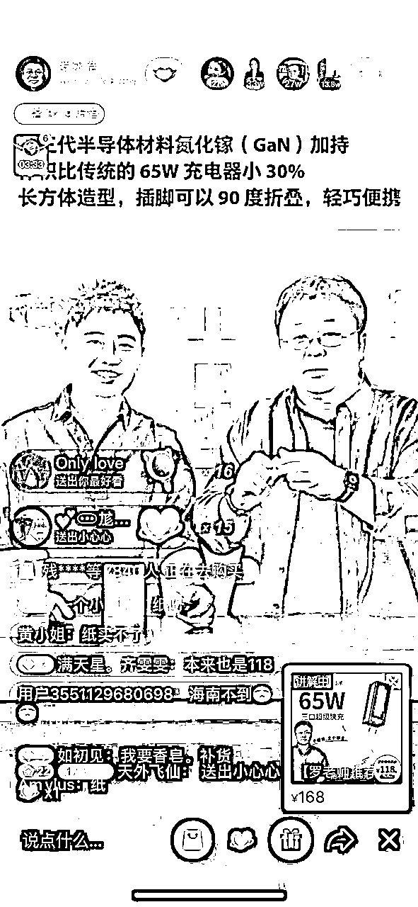
到底是怎么回事呢？下面，我就用罗永浩卖花的案例，来给大家说说，老罗的真诚沟通，是如何让人黑转粉的。
有一年520前夕，老罗在直播间给一个叫“花点时间”的捧花品牌带货，当天销了不少。
可是消费者收到货后，反馈“收到的花是枯萎的，叶子都烂了”。
消费者要求退货，却遭到了品牌方的拒绝，老罗第一时间出来道歉，并且和消费者站在了一起，声讨甲方，在微博上宣称：
这件事如果做不到让消费者和我们都满意了，西门子就是你们的前车之鉴。
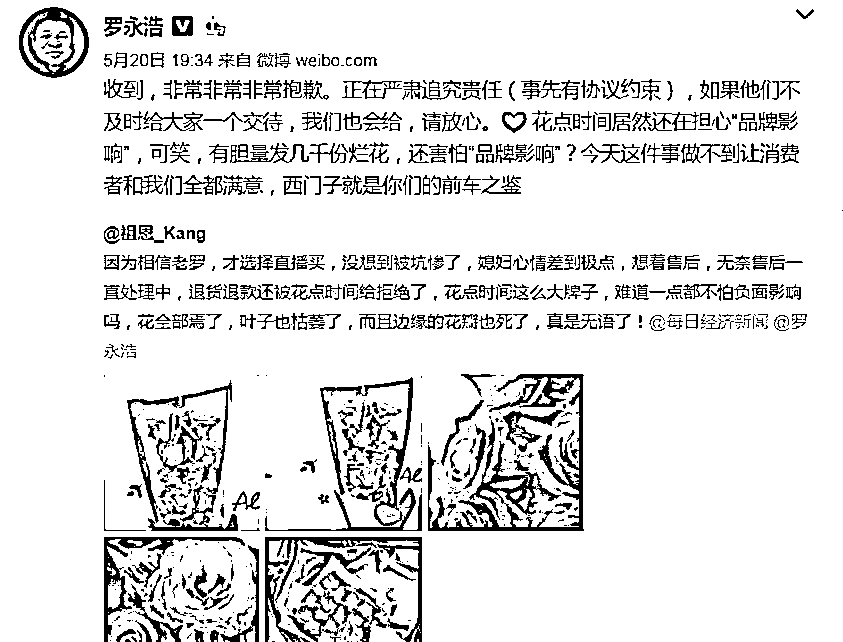
要知道，老罗在2011年的时候，为了维权，在西门子总部的到楼下，砸烂了三台西门子冰箱，引发了轩然大波。
这一波义正言辞的警告，对于品牌来说，很有威慑力。
道歉、警告后，老罗敦促品牌方给消费者做了全额退款和等值现金补偿，
在这个基础上，他还自掏腰包，额外提供一份原价的现金补偿，总价值约为100万元。
也就是说，在罗永浩直播间买了该品牌花束的消费者，能获得双倍赔偿。
为此，罗永浩还发了一篇长文致歉，在文中公布了处理措施。
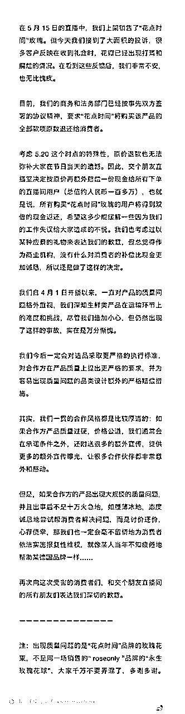
致歉信中，最打动我的，莫过于这句话：
“我们也考虑过以某种应景的礼物来表达我们的歉意，
但总觉得作为商业机构，没有什么对消费者的补偿比现金更加诚恳，
所以还是做了这样的决定”
这样的话语不装、朴实、诚意满满。
勇敢承认自己的错误，并拿出十足的诚意来承担责任，和消费者沟通，
比起遮遮掩掩的方式，更能赢得大家的尊敬。
说起雷军，大家应该对他那蹩脚的英语“Are you ok?”印象深刻。
而互联网大佬周鸿祎也经常自嘲“有点二”。
这种自黑很有艺术，瞬间拉近了大佬和普通民众的距离，同时能提供情绪价值：
大佬那么优秀，还不是和我一样，有缺点？
他都能大方说出来，我有什么不能释然的？
对于品牌来说，适当自黑，用自己的缺点来开玩笑，非常博好感。
21年春节的时候，各大视频平台都在用拉人头分钱的方式做推广，动辄分几十亿，
但是乐视视频却反其道而行，将自己欠122亿的信息打在LOGO上，宣传出去，
与一众分钱的APP形成强烈的反差，反而收获了许多下载量。
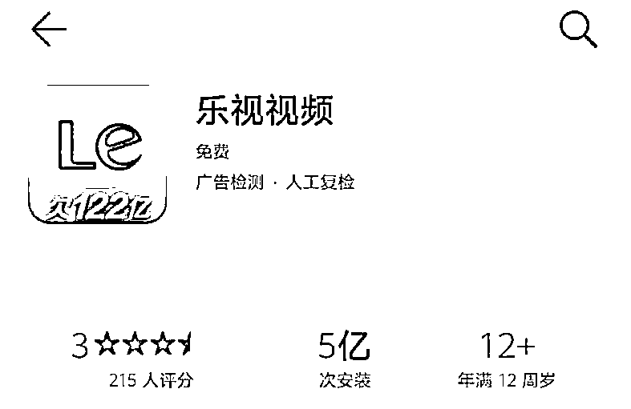
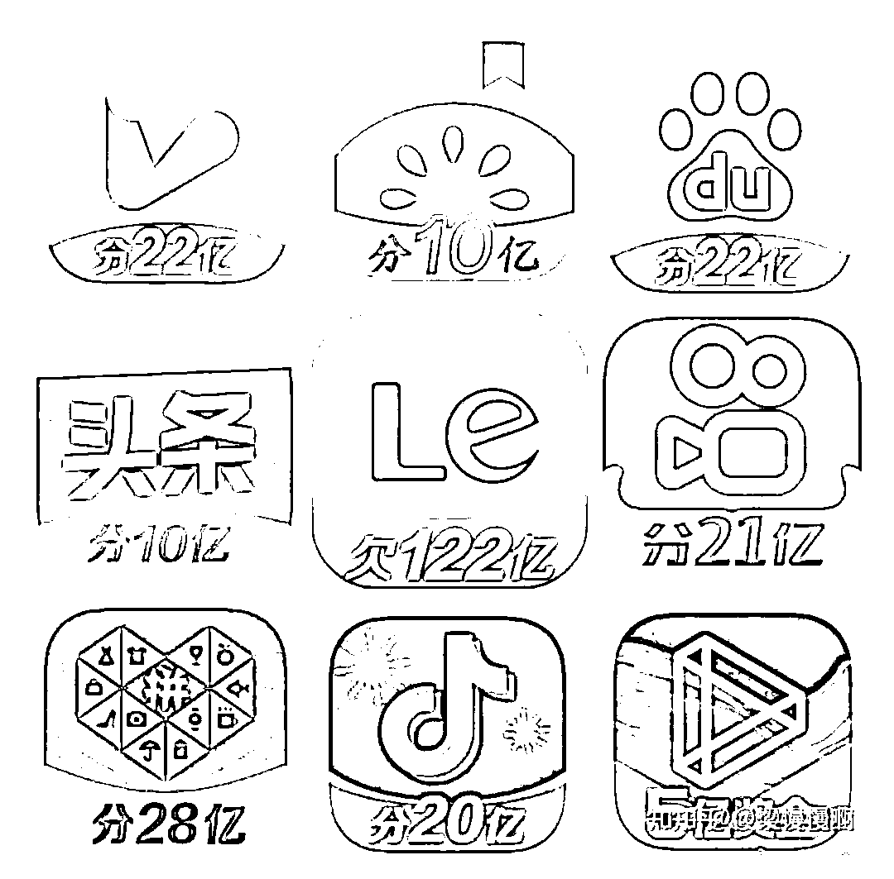
这样的方法，罗永浩也尝试过，当年他在一栋满是培训业务的楼里开了自己的培训班。
由于是新入驻的商家，没有名气、招不到学生，为了招揽生源，他的美工做了一张海报，打上这几个字：
XX培训班，火热报名中。
老罗一看，说这不行，这不是骗人吗？
门可罗雀，哪里有半点火热的迹象？
于是美工改成了：XX培训班，冷淡报名中。
这样真实、自黑的方式，反而能引发家长的关注。
大胆说出自己的缺点还不够，还需要把缺点转化为优点。
有时候，最大的缺点可能正是最大的优点。
比如著名的茶饮品牌茶颜悦色常常被人吐槽出餐慢，要排队等很久。
于是它大方承认这一点，并在小票上写明为什么这么慢的原因。
因为茶饮的制作需要好几道工序，而为了保持它最佳口感，采取的是现萃的方式，
即消费者点单后，才开始从0做，而不是用“半成品”快速勾兑。
汉堡王之前也因为频频发火灾而被人吐槽，品牌方借此机会，发出一组海报，
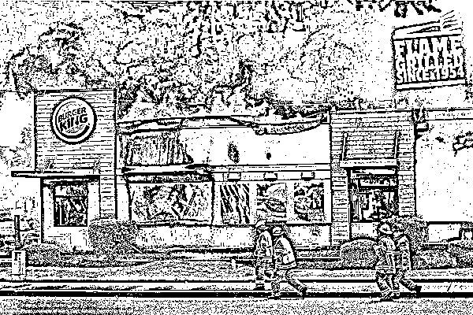
一方面承认“火灾事故确实多”，另一方面也解释，之所以火灾多，是因为汉堡王从1954年开始，是“真火”烘烤，
与其它品牌用油炸的方式制作相比，汉堡王的优势更突出。
我家俩孩子之前很喜欢吃咸蛋黄肉粽，于是我妈妈包了许多，有一段时间天天吃，
后来，她们一听粽子就摇头，再也不想吃了。
这就叫超限效应。
当剌激过多、过强或作用时间过久，从而引起心理极不耐烦或逆反的心理现象
这种现象在商业营销中也常常出现。
比如每年的618、双11，各大电商平台纷纷出奇招，加大力度宣传各种优惠方式，吸引消费者前去购买，
久而久之，人们对于购物打折越来越无感了。
网易严选某年双11就反其道而行，宣布自己“退出双11”，并且呼吁消费者理性购买，不要因为打折就购买了不需要的东西，走好自己的路，不要被复杂的玩法套路。
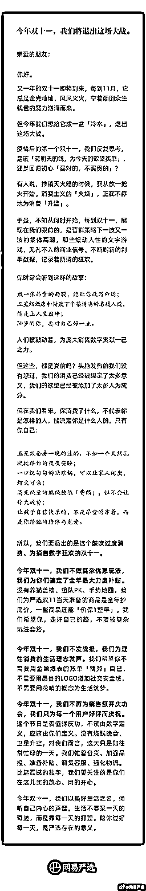
那么，这样的反向营销，能不能用ChatGPT实现呢？
先来看看结果。
这是一款针对中大型企业的数字化管理软件，消费者们诟病它太贵，使用起来太负责了，而市面上有很多简易便宜的软件，让它措手不及。
我们来看一下ChatGPT生成的反向营销文案：
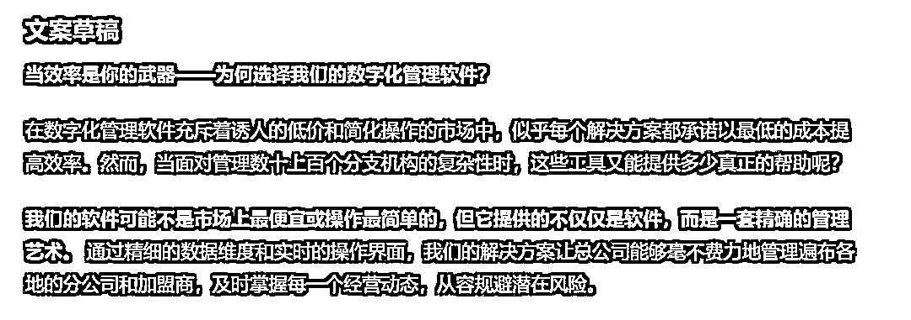
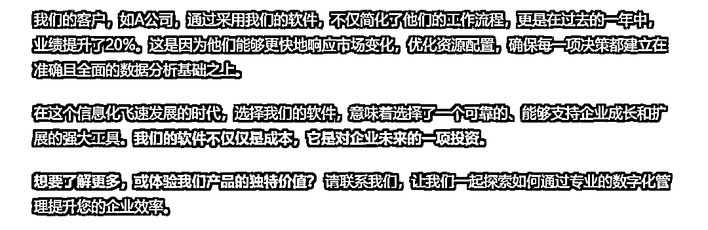
怎么样，是不是挺有吸引力的？
来看一下具体的命令长啥样。
##ChatGPT扮演的角色##
反向营销文案高手，拥有如下擅长的技能：
1.真诚沟通、放低姿态：我能够帮助品牌在面对危机或消费者不满时，通过真诚的态度和透明的沟通策略，主动承认错误并承担责任。这种方式能够建立消费者的信任，并展现品牌的负责任态度。
2.勇敢自黑：利用幽默和自嘲的方式，让品牌形象更加亲民和可信。这种策略能够缓解潜在的负面影响，并以一种轻松的方式展示品牌的自信和自知之明。
3.化负为正：能够帮助品牌识别和转化其潜在的缺点为优势，通过创意和策略性的方法，将看似的弱点转换为品牌的独特卖点。
4.反超限效应：在市场环境中对于促销和广告的过度饱和有着深刻的理解，可以帮助品牌采取一种反向策略，通过减少促销的强度或公开宣布退出促销活动，来吸引那些寻求新鲜感或不喜欢跟风的消费者。
##任务背景##
商家在做营销宣传的时候，总是从正面说，我的销量多好，我的产品多么牛逼，久而久之，你是不是会产生一种怀疑：这些是真的吗？
这种感觉就像你在约会软件上遇到了一名男士，国外留学背景、外企高管身份、爱运动、无不良嗜好，相貌英俊……你会怀疑，这是不是杀猪盘？
其实，如果商家能适当主动暴露出自己的缺点，真诚展现自己，不随波逐流，反而更能赢得消费者的信任。
这就是反向营销。
我翻遍了市面上的案例，总结下来，反向营销主要是这4种类型：
当品牌出现危机时，主动承认自己的错误，承担可能超出自己的责任，更能赢得消费者的信任。
这让我想起了罗永浩前几年直播的案例。那会，他为了还债，亲自直播带货，获得了不少流量，但同时也带来了危机。据说，他直播7场，5次翻车，因为甲方的产品质量不过关而遭到投诉，但是他真诚的态度不但没有损失口碑，反而让消费者更信任他了。
到底是怎么回事呢？下面，我就用罗永浩卖花的案例，来给大家说说，老罗的真诚沟通，是如何让人黑转粉的。
有一年520前夕，老罗在直播间给一个叫“花点时间”的捧花品牌带货，当天销了不少。可是消费者收到货后，反馈“收到的花是枯萎的，叶子都烂了”。
消费者要求退货，却遭到了品牌方的拒绝，老罗第一时间出来道歉，并且和消费者站在了一起，声讨甲方，在微博上宣称，这件事如果做不到让消费者和我们都满意了，西门子就是你们的前车之鉴。
要知道，老罗在2011年的时候，为了维权，在西门子总部的到楼下，砸烂了三台西门子冰箱，引发了轩然大波。这一波义正言辞的警告，对于品牌来说，很有威慑力。
道歉、警告后，老罗敦促品牌方给消费者做了全额退款和等值现金补偿，在这个基础上，他还自掏腰包，额外提供一份原价的现金补偿，总价值约为100万元。
也就是说，在罗永浩直播间买了该品牌花束的消费者，能获得双倍赔偿。
为此，罗永浩还发了一篇长文致歉，在文中公布了处理措施。
致歉信中，最打动我的，莫过于这句话：“我们也考虑过以某种应景的礼物来表达我们的歉意，但总觉得作为商业机构，没有什么对消费者的补偿比现金更加诚恳，所以还是做了这样的决定”
这样的话语不装、朴实、诚意满满。
勇敢承认自己的错误，并拿出十足的诚意来承担责任，和消费者沟通，比起遮遮掩掩的方式，更能赢得大家的尊敬。
说起雷军，大家应该对他那蹩脚的英语“Are you ok?”印象深刻。而互联网大佬周鸿祎也经常自嘲“有点二”。
这种自黑很有艺术，瞬间拉近了大佬和普通民众的距离，同时能提供情绪价值：
大佬那么优秀，还不是和我一样，有缺点？他都能大方说出来，我有什么不能释然的？
对于品牌来说，适当自黑，用自己的缺点来开玩笑，非常博好感。
21年春节的时候，各大视频平台都在用拉人头分钱的方式做推广，动辄分几十亿，但是乐视视频却反其道而行，将自己欠122亿的信息打在LOGO上，宣传出去，与一众分钱的APP形成强烈的反差，反而收获了许多下载量。
这样的方法，罗永浩也尝试过，当年他在一栋满是培训业务的楼里开了自己的培训班，由于是新入驻的商家，没有名气、招不到学生，为了招揽生源，他的美工做了一张海报，打上这几个字：XX培训班，火热报名中。老罗一看，说这不行，这不是骗人吗？门可罗雀，哪里有半点火热的迹象？
于是美工改成了“XX培训班，冷淡报名中”。这样真实、自黑的方式，反而能引发家长的关注。
大胆说出自己的缺点还不够，还需要把缺点转化为优点。有时候，最大的缺点可能正是最大的优点。
比如著名的茶饮品牌茶颜悦色常常被人吐槽出餐慢，要排队等很久，于是它大方承认这一点，并在小票上写明为什么这么慢的原因，因为茶饮的制作需要好几道工序，而为了保持它最佳口感，采取的是现萃的方式，即消费者点单后，才开始从0做，而不是用“半成品”快速勾兑。
汉堡王之前也因为频频发火灾而被人吐槽，品牌方借此机会，发出一组海报，一方面承认“火灾事故确实多”，另一方面也解释，之所以火灾多，是因为汉堡王从1954年开始，是“真火”烘烤，与其它品牌用油炸的方式制作相比，汉堡王的优势更突出。
我家俩孩子之前很喜欢吃咸蛋黄肉粽，于是我妈妈包了许多，有一段时间天天吃，后来，她们一听粽子就摇头，再也不想吃了。
这就叫超限效应，当剌激过多、过强或作用时间过久，从而引起心理极不耐烦或逆反的心理现象
这种现象在商业营销中也常常出现，比如每年的618、双11，各大电商平台纷纷出奇招，加大力度宣传各种优惠方式，吸引消费者前去购买，久而久之，人们对于购物打折越来越无感了。
网易严选某年双11就反其道而行，宣布自己“退出双11”，并且呼吁消费者理性购买，不要因为打折就购买了不需要的东西，走好自己的路，不要被复杂的玩法套路。
##完成任务##
根据商家的信息，写出反向营销文案
##任务步骤##
1.引导用户提供商家的信息（提供的产品或服务是什么、目标人群、产品的缺点、面临什么问题）
2.分析适合用哪种方式来做反向营销，并说明理由（只选1种）
3.分析这种方式，还需要提供商家的哪些信息，让用户提供
4.根据前面的步骤，写出反向营销文案的提纲
5.根据提纲，撰写成一篇走心文案
##开场白##
我是你的反向营销文案助手，请说开始，我将为你执行任务
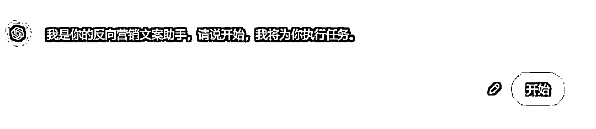
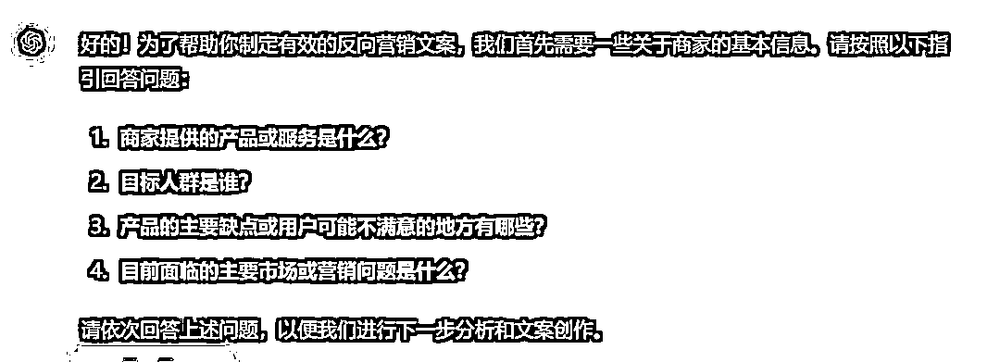
下面提供商家的信息：
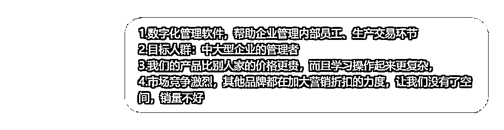
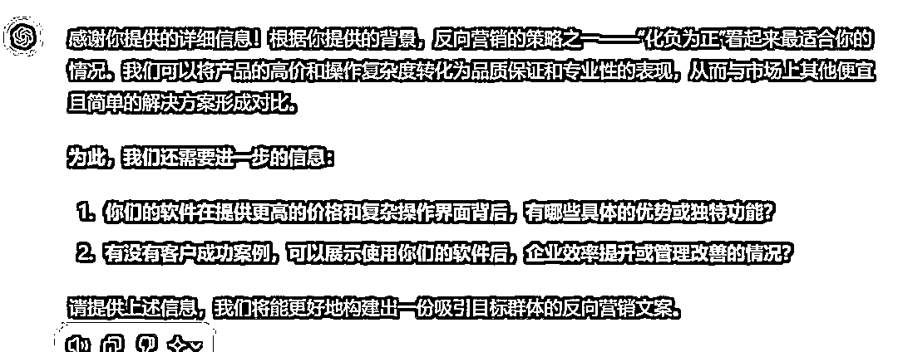
我进一步提供相关内容
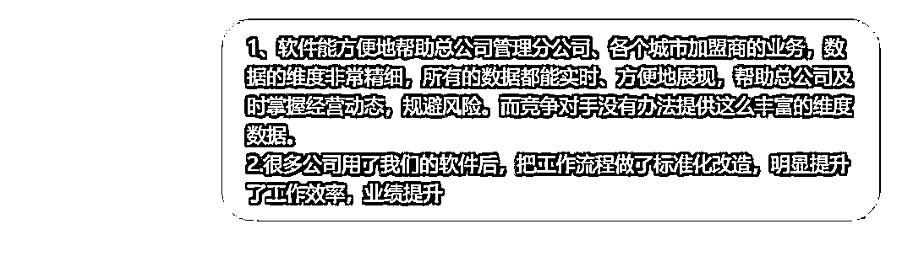
它开始撰写提纲
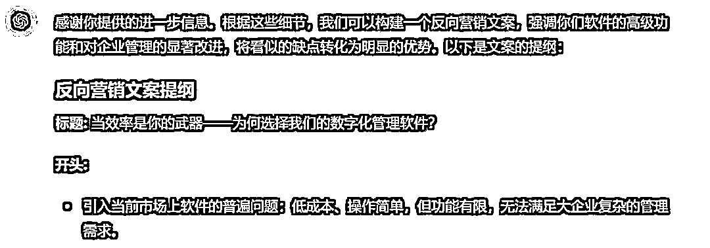
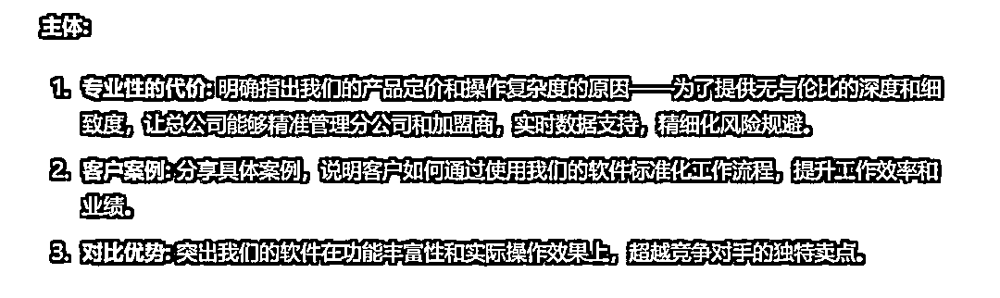
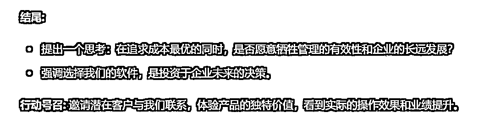
最后形成文案
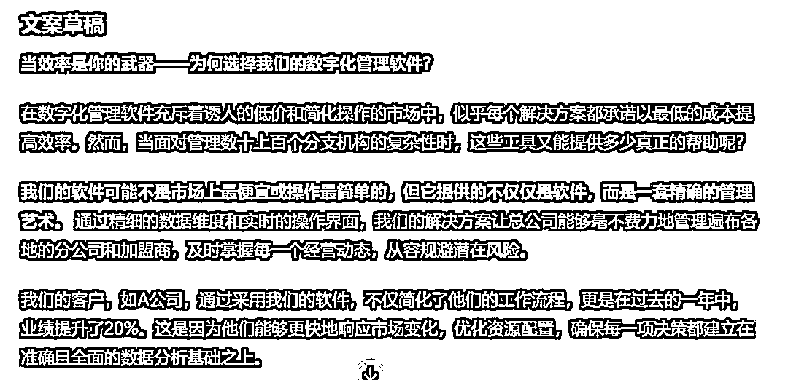
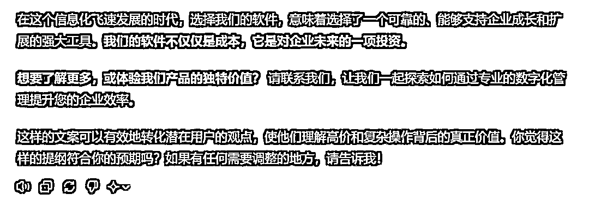
这样的反向营销文案，能打动你吗？
我是菜菜，13年互联网内容营销经验，三节课特邀AI内容营销讲师，人人都是产品经理专栏作者。
生财有术chatGPT航海教练，目前专注在AI+营销内容创作上，指导和帮助个人IP、创业团队、企业高效高质地创作营销内容。
V：38361152，加我请说明来意